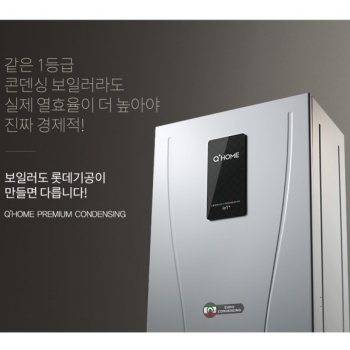
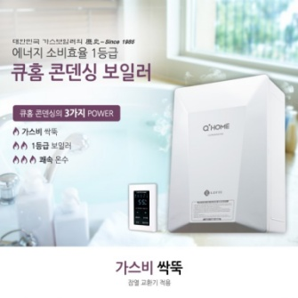
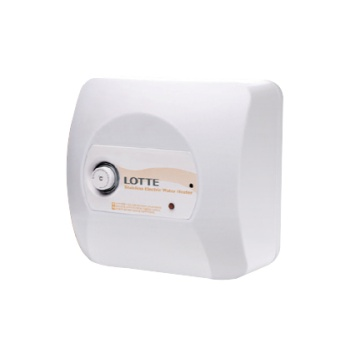
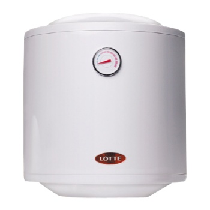

보일러
Pride of LOTTE ENGINEERING & MACHINERY MFG is more than usual
보일러 본체
-
-

-
유럽 최신형 3D버너와 360º 입체 열교환기를 적용한 큐홈 프리미엄 콘덴싱 보일러
1. 국내 최고 수준의 열효율 92.8%
2. 최신 유럽형 열교환기 적용
3. 뛰어난 온수 출탕 기능
4. 에너지효율1등급과 저Nox 1등급의 고효율 친환경보일러
5. WI-FI를 통한 리모컨 제어(스마트IOT)
6. 지역별 실시간 날씨정보 제공
-
유럽 최신형 3D버너와 360º 입체 열교환기를 적용한 큐홈 프리미엄 콘덴싱 보일러
-
-

-
대한민국 콘덴싱 보일러의 진정한 품질 혁명!!
큐홈 콘덴싱 보일러
1. 가스비가 일반형보다 확실히 적게 든다!
2. 콘덴싱이지만, 가격이 착하다!
3. 6초 온수 출탕으로 빠르다!
4. 스테인리스 스틸 적용, 튼튼하고 오래쓴다!
5. 작동 소음, 작다!(44dB)
-
대한민국 콘덴싱 보일러의 진정한 품질 혁명!!
큐홈 콘덴싱 보일러
전기 온수기
-
-

- 롯데 저장식 전기 온수기 LWH-150U(D)
스테인레스 온수탱크를 적용하여 깨끗하고 위생적인 온수 사용이 가능합니다.
1.스테인레스 온수탱크를 적용하여 녹물이 없으며, 위생적이고 반영구적으로 사용하실 수있습니다.
2.다양한 작업 환경에 맞춰 상향 또는 하향 배관 시공이 가능하여 제품 설치 및 사용의 편의성을 강화하였습니다. (50L 제외)
3.사용 후 지정 온도가 되면 전원이 자동 차단되며, 폴리우레탄 보온재 사용으로 열 손실을 최소화한 경제적인 제품입니다.
4.자동온도 조절 장치와 과열방지 센서가 내장되어, 과승온도 발생 시 전원을 자동 차단시켜 제품의 안정성을 강화하였습니다.
- 롯데 저장식 전기 온수기 LWH-150U(D)
-
-

- 롯데 저장식 전기 온수기 LWH-500
스테인레스 온수탱크를 적용하여 깨끗하고 위생적인 온수 사용이 가능합니다.
1.스테인레스 온수탱크를 적용하여 녹물이 없으며, 위생적이고 반영구적으로 사용하실 수있습니다.
2.다양한 작업 환경에 맞춰 상향 또는 하향 배관 시공이 가능하여 제품 설치 및 사용의 편의성을 강화하였습니다. (50L 제외)
3.사용 후 지정 온도가 되면 전원이 자동 차단되며, 폴리우레탄 보온재 사용으로 열 손실을 최소화한 경제적인 제품입니다.
4.자동온도 조절 장치와 과열방지 센서가 내장되어, 과승온도 발생 시 전원을 자동 차단시켜 제품의 안정성을 강화하였습니다.
- 롯데 저장식 전기 온수기 LWH-500
멀티 온도조절 시스템
| 모델명 | HHC-370, 607, 707 |
|---|---|
| 외형치수 | 180 x 130 x 58mm (WxHxD) |
| 제어방법 | 반복시간제어 |
| 최대제어수 | 7ZONE |
| 입력전압 | AC 22V |
| 모델명 | HRC-1101RF |
|---|---|
| 외형치수 | 80 x 120x 10mm (WxHxD) |
| 온도센서/통신방식 | NTC/디지털 pulse width 방식 |
| 동작전원 | 극 12V |
| 설정온도범위 | 10℃~40℃ |
| 외부결선방법 | 2P 극성(+,-) |